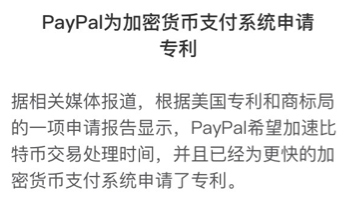
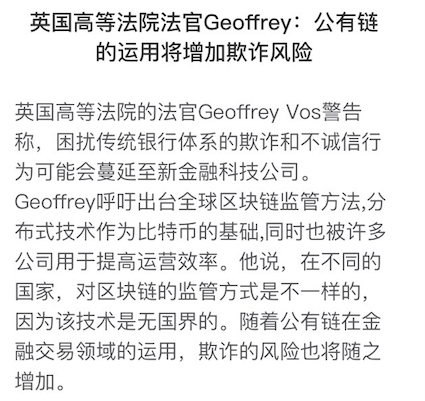
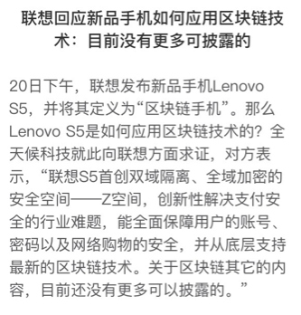
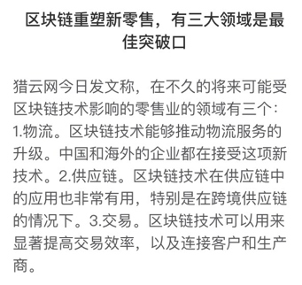

区块链内刊参考 VOL1
时间短 2018年3月12日-2018年3月21日
一、最近发布的一些区块链项目白皮书
金链盟旨在整合及协调金融区块链技术研究资源，形成金融区块链技术研究和应用研究的合力与协调机制，提高成员单位在区块链技术领域的研发能力，探索、研发、实现适用于金融机构的金融联盟区块链，以及在此基础之上的应用场景。
二、国内外发布的一些与区块链相关的政策法规
3月12日
作为广州建设国际科技创新枢纽核心区的黄埔区、广州开发区，紧密对接国家“区块链+”发展战略。2017年12月，黄埔区、广州开发区出台《广州市黄埔区广州开发区促进区块链产业发展办法》，针对区块链产业多个环节给予重点扶持，是目前国内支持力度最大、模式突破最强的区块链扶持政策。
3月15日
- 日前工信部发布公告称，正在就筹建全国区块链和分布式记账技术标准化委员会事宜开展专题研究，旨在尽快推动玩呗的区块链标准体系。截至目前，国内共有浙江、江苏、贵州、福建、广东等9个省份就区块链发布指导意见，多个省份甚至将区块链列入本省“十三五”战略发展规划。
- 人大代表李秉记：建议运用区块链技术进行学历学位证书认证
3月16日
据最新消息，微软开始采取BCH支付游戏、Xbox游戏机及应用等产品，但该服务仅适用于来自美国的客户。截至目前，BCH全球均价918.43美元，24小时涨幅3.4%。
3月17日
- 银监会指导成立金融云公司，其业务方向瞄准公共区块链服务等
据21世纪经济报消息，监会牵头16家金融机构成立一家金融云公司——融联易云金融信息服务（北京）有限公司（简称“融联易云”），不过金融云公司目前尚未开展业务，其业务方向是提供公共科技服务，如公共云服务、公共大数据服务、公共区块链服务、公共风险管理服务等。
据外媒coindesk报道称，在经过近一年的幕后工作之后，华为推出了一款工具，旨在测试主要区块链性能。据悉，他们现在正在准备正式提交给Linux Foundation领导的超级账本（Hyperledger）区块链联盟。
3月18日
- 法国监管机构将立法使ICO合法化
据法国当地新闻机构LesEchos 3月15日报道，法国金融市场监管局AMF准备出台相关法规是首次代币发行（ICO）合法化，以鼓励新型融资方式在该过的发展。法国经济和财政部已确认，AMF提出的监管框架将认可ICO为合法的投资手段。
三、最近落实的商用区块链项目案例
枫玉科技是一家以法律科技（LawTech）作为切入点的区块链落地应用公司，已上线三个产品系列：证宝宝、签宝宝、法123导航网。三者有机结合，构建法律数字化的基础设施体系，为企业、机构和个人提供取证、存证、电子签名等基础性的服务。
目前，枫玉科技主要以SaaS服务收费的方式盈利。未来，团队将会收到来自通证经济新模型的分成收益。
四、一些区块链的行业数据
五、数字货币的一些信息
六、其他
3月13日
3月15日
- 中国最大的液化天然气（LNG），供给商壳牌能源已参与投资了多家公司，共同建立了大宗商品贸易平台，以期发掘区块链技术在此方面的应用场景。
- 当版权遇上区块链，未来版权让区块链应用场景迅速落地
未来版权主要有四大功能：艺术作品的版权存证、其次IP和IP衍生类的去中介交易，IP的创作众筹、未来IP的共享模式。
对于链娱科技来说，目前遇到最大的困难还是整个区块链行业的现状之一——人才的缺乏，另一方面，如何说服传统版权行业引用区块链技术，并且认可它，是一个难点，再教育市场方面，还需要一些时间。
贵阳，5年建成主权区块链应用示范区。在2016年工信部发布《中国区块链技术和应用发展白皮书》之后，贵阳市政府于2016年12月、赣州市政府于2017年7月分别先后发布了白皮书。
赣州，成为中国第一个区块链沙盒。江西省赣州区块链金融产业沙盒园暨地方新型金融监管沙盒，是我国第一个由政府部门主导的区块链监管沙盒。
3月16日
- BM表示，基于ETH的Dapp应用可以实现迁移到EOS平台，重新编译只能合约是容易实现的，全部流程的迁移可以在一周内完成。
3月17日
3月18日
- 
3月19日
3月20日
3月21日
- 港交所将效仿澳交所开发区块链结算系统
- 区块链+法律，「有征」用区块链保证网贷电子证据的不可篡改
- 央行如果发行数字货币会怎样？这是最权威的分析
- 姚前: 央行数字货币的考量
- 关于IPFS和FileCoin的一切,IPFS优点众多或将颠覆HTTP协议
- 
- 
- 